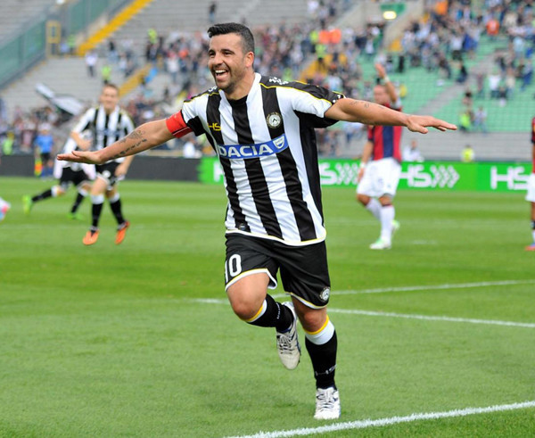

Claudio Ranieri è un allenatore di calcio italiano, noto per il suo approccio tattico e la sua capacità di motivare i giocatori. È diventato famoso a livello internazionale durante il suo periodo alla guida del Leicester City, dove ha portato la squadra a vincere la Premier League nel 2016, un'impresa considerata una delle più grandi sorprese nella storia del calcio. Nella sua carriera, tra le altre, ha allenato anche la Juventus
Loading logo Juventus...
Ci tengo a precisare che non sono juventino, tifo Udinese e questo è un semplice scherzo. No, il logo non carica perchè è una gif di un'animazione di caricamentoNon dimentichiamo. Il calcio e lo sport sono magnifici, credo che poche altre cose possano arrivare al cuore delle persone con così tanta forza. Peccato per gli scandali e gli errori arbitrali

7 aprile 2013, Chievo Verona - Udinese. Non dimentichiamoci mai di questo goal leggendario! Fatto da uno dei giocatori più forti e sottovalutati: Antonio Di Natale
